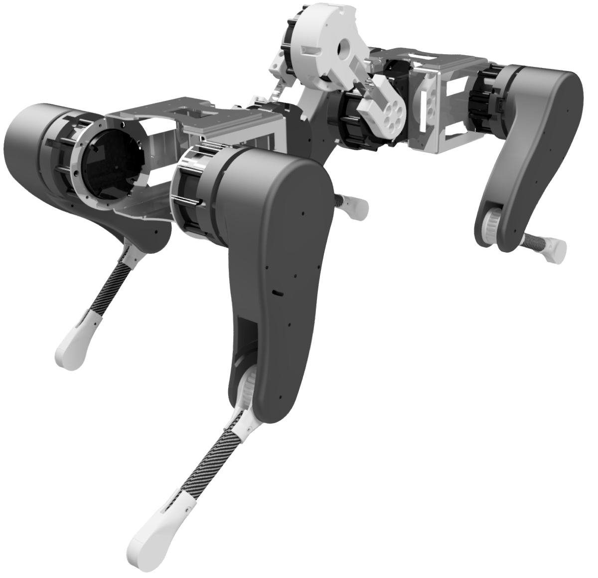
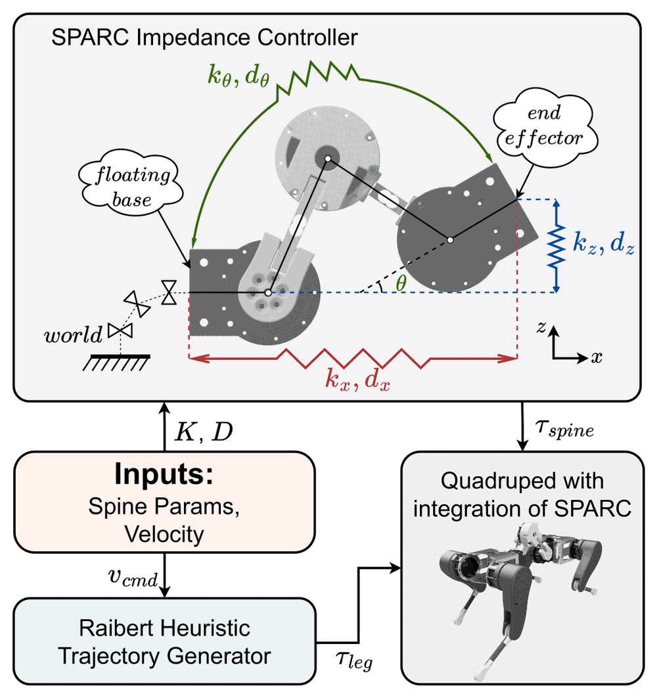
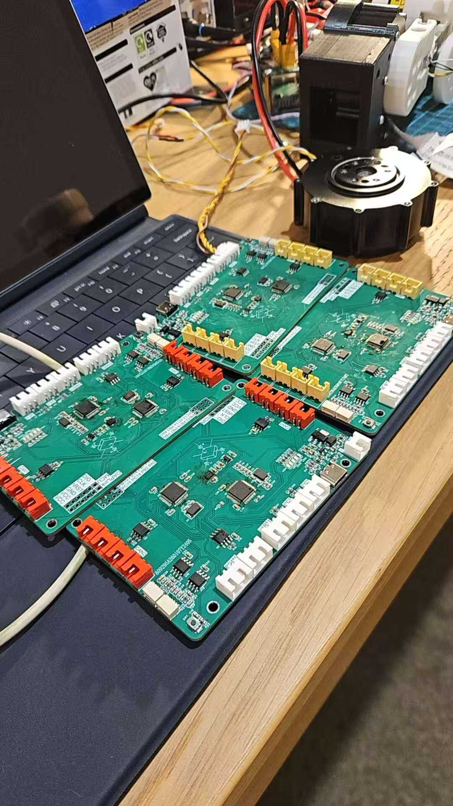
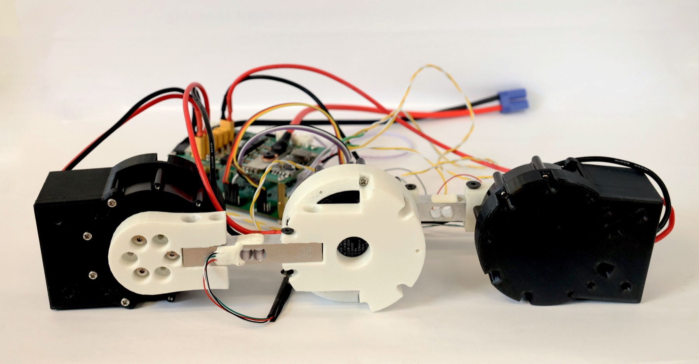

01
2023 至今自主研发
四足机器狗与 SPARC
主动柔性脊柱
8 自由度四足机器人的机械结构、传动、电控板和整机装配都是从零做的，脊柱模块 SPARC 重 1.26 kg、3 个自由度。刚体动力学、任务空间阻抗控制和摩擦补偿在 FreeRTOS 上以 1 kHz 跑。




- 300 至 700 N/m 的刚度台架实验，跟踪误差不超过 1.5%
- 97 次 bounding 步态实机实验，最高速度 1.029 m/s
- 在 Isaac Lab 里用 AMP 做 11 自由度带脊柱四足机器人的强化学习控制